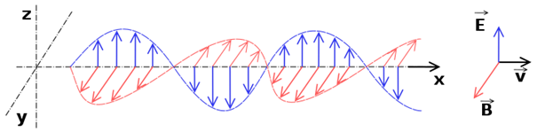

De quoi parle-t-on ?
Les ondes électromagnétiques sont un sujet complexe compte tenu des enjeux liés à la santé. Dans cette partie informative, nous allons essayer de vous donner tous les éléments nécessaires à la compréhension du sujet.
Pour plus d'informations, vous pouvez vous rapprocher de l'association SERA (Santé Environnement Rhône Alpes)Qu'est-ce qu'une onde électromagnétique ?
« Une onde électromagnétique est une catégorie d’ondes qui peut se déplacer dans un milieu de propagation comme le vide ou l’air, avec une vitesse avoisinant celle de la lumière, soit près de 300 000 kilomètres par seconde. Ces ondes sont par exemple produites par des charges électriques en mouvement. Elles correspondent aux oscillations couplées d’un champ électrique et d’un champ magnétique, dont les amplitudes varient de façon sinusoïdale au cours du temps.
 V = Vitesse de déplacement de l'onde E = Champ électrique B = Champ magnétique © Emmanuel Boutet/Wikimedia Commons
Les ondes électromagnétiques transportent de l’énergie mais elles sont aussi capables de transporter de l’information. C’est pourquoi elles sont utilisées dans le domaine de la communication. Concrètement, les ondes électromagnétiques servent à faire fonctionner les smartphones, les postes de radio, ou encore sont utilisées pour faire des radiographies du corps humain. De même, la lumière visible est une onde électromagnétique ; elle nous permet de voir les couleurs.Ces différentes ondes électromagnétiques se différencient et sont caractérisées par leur fréquence, c’est-à-dire le nombre d’oscillations en une seconde. La fréquence est exprimée en Hertz. Une autre caractéristique des ondes électromagnétiques est la longueur d’onde, c’est-à-dire la distance qui sépare deux oscillations de l'onde. Elle est inversement proportionnelle à la fréquence. » Source : CEA, 2023
Tableau récapitulatif des normes et seuils
Les principaux acteurs
ANFR
L’ANFR est un établissement public gérant l’ensemble des fréquences radioélectriques en France. Elle surveille l’exposition du public aux ondes et veille au respect des valeurs limites qui garantissent l’absence d’effets sur la santé ; elle s’assure également de la conformité des équipements radios et des terminaux disponibles sur le marché en procédant à des mesures de débit d’absorption spécifique (DAS) ; elle veille à la protection de la réception de la TNT et traite les réclamations
Opérateur téléphonique
Les 3 principaux français : Orange/ Bouygues, Free Illiade, SFR. Un opérateur de communications électroniques est défini comme « une entreprise qui fournit ou est autorisée à fournir un réseau de communications public ou une ressource associée »
ANSES
L’ANSES évalue les effets éventuels des champs électromagnétiques sur la santé, en vue d’éclairer les décisions publiques. L’Agence a en particulier rendu des avis sur les effets sur la santé de la 5G, des lignes haute tension, des scanners corporels ou encore des diodes électroluminescentes
Ville de Lyon
La ville (de Lyon), service santé-environnement : Assure suivi du dispositif de charte téléphonie mobile Assure le suivi du déploiement des émetteurs Effectue recensement via mesures (établissements sensibles ou dispositif anfr) Est dépositaires des dossiers d'information opérateur
Europe
La recommandation 1999/519/CE du Conseil du 12 juillet 1999 relative à la limitation de l’exposition du public aux champs électromagnétiques (de 0 Hz à 300 GHz) est fondée sur les travaux de la Commission Internationale de Protection Contre les Rayonnements Non Ionisants (ICNIRP) qui a proposé des valeurs limites d'exposition des personnes aux champs électromagnétiques en 1998 ». (Ministère de la santé, fiche). Aujourd'hui les seuils limites en vigueur en France sont toujours ceux définis par l'ICNIRP en 1998 sur la base des seuls effets thermiques et pour des communications de 6 minutes.
Le matériel utilisé
Pour nos campagnes de mesure dans le quartier de la Croix-Rousse, nous avons utilisé le matériel suivant :
Le CORNET® "ED85EXPlus5"
Il permet de mesurer :
- Les champs de haute-fréquence de 800MHz à 6 GHz (étendue de 600MHz à 8GHz avec une antenne optionnelle)
- Les champs magnétiques basses fréquences (BF) de 50Hz à 10 KHz.
Le TES-92 "AC ElectroSmog Meter"
Ses principales acarctéristiques :
- Mesure les champs de haute-fréquence uniquement, de 50MHz à 3.5 GHz
- Permet de mesurer les REM sur 3 axes, ou d'interpoler une valeur unique